if (!require("BiocManager", quietly = TRUE)) install.packages("BiocManager")
BiocManager::install(c("DESeq2", "vsn", "edgeR", "arrayQualityMetrics"))Multivariate Differential Gene Expression
Following MarineOmics Functional Genomics Tutorial step-by-step with a non-linear model and time as a factor
Goals
To follow the MarineOmics Fitting Multifactorial Models of Differential Expression walkthrough step-by-step with the gene count matrix from the coral-embryo-RNAseq project. I’ve copied and pasted many of the tutorial instructions and explanations in order for me to understand my data in context. Anything copied from MarineOmics is in blockquotes. I have simply replaced their pC02 environmental condition variable with leachate and their day time variable with hours post-fertilization, hpf .
Experimental design
Egg-sperm bundles were cross-fertilized from genetically distinct parent colonies resulting in ~30 embryos per vial
4 leachate levels (continuous variable)
- 0, 0.01, 0.1, 1 mg/L concentrations
3 embryonic stages (discrete variable)
4, 9, 14 hours post fertilization
cleavage, prawn chip, early gastrula
12 treatments, n = 4 or 5 per treatment
Each pooled samples therefore represents genetic variation of up to 6 distinct colonies

Exploratory PCAs
All 63 samples across 12 treatments grouped by hours post fertilization 
The outliers were removed reducing our dataset to 61 samples

I ran a pairwise DESeq2 analysis between our control and highest leachate exposure for each time point (4, 9, & 14). There were 0 DEGs across all timepoints between control and high treatments. 
Setup
Install packages
if ("tidyverse" %in% rownames(installed.packages()) == 'FALSE')
install.packages('tidyverse')
if ("DESeq2" %in% rownames(installed.packages()) == 'FALSE')
install.packages('DESeq2')
if ("edgeR" %in% rownames(installed.packages()) == 'FALSE')
install.packages('edgeR')
if ("ape" %in% rownames(installed.packages()) == 'FALSE')
install.packages('ape')
if ("vegan" %in% rownames(installed.packages()) == 'FALSE')
install.packages('vegan')
if ("GGally" %in% rownames(installed.packages()) == 'FALSE')
install.packages('GGally')
if ("arrayQualityMetrics" %in% rownames(installed.packages()) == 'FALSE')
install.packages('arrayQualityMetrics')
if ("rgl" %in% rownames(installed.packages()) == 'FALSE')
install.packages('rgl')
if ("MASS" %in% rownames(installed.packages()) == 'FALSE')
install.packages('MASS')
if ("data.table" %in% rownames(installed.packages()) == 'FALSE')
install.packages('data.table')
if ("plyr" %in% rownames(installed.packages()) == 'FALSE')
install.packages('plyr')
if ("lmtest" %in% rownames(installed.packages()) == 'FALSE')
install.packages('lmtest')
if ("reshape2" %in% rownames(installed.packages()) == 'FALSE')
install.packages('reshape2')
if ("Rmisc" %in% rownames(installed.packages()) == 'FALSE')
install.packages('Rmisc')
if ("statmod" %in% rownames(installed.packages()) == 'FALSE')
install.packages('statmod')
if ("stringr" %in% rownames(installed.packages()) == 'FALSE')
install.packages('stringr')Load packages
# Load packages
library(DESeq2)
library(edgeR)
library(tidyverse)
library(ape)
library(vegan)
library(GGally)
library(arrayQualityMetrics)
library(rgl)
#library(adegenet)
library(MASS)
library(data.table)
library(plyr)
library(lmtest)
library(reshape2)
library(Rmisc)
#library(lmerTest)
library(statmod)
library(stringr)Import gene counts
In this count matrix, each row represents a gene, each column a sequenced RNA library, and the values give the estimated counts of fragments that were assigned to the respective gene in each library by HISAT2
check.names = FALSEremoved the ‘X’ from in front of sample id’s in the column headers
gcm <- read.csv("../output/05_count/gene_count_matrix.csv", row.names="gene_id", check.names = FALSE)
head(gcm)| 101112C14 | 101112C4 | 101112C9 | 101112H14 | 101112H4 | 101112H9 | 101112L14 | 101112L4 | 101112L9 | 101112M14 | 101112M4 | 101112M9 | 123C14 | 123C4 | 123C9 | 123H14 | 123H4 | 123H9 | 123L14 | 123L4 | 123L9 | 123M4 | 123M9 | 131415C14 | 131415C4 | 131415C9 | 131415H14 | 131415H4 | 131415H9 | 131415L14 | 131415L4 | 131415L9 | 131415M14 | 131415M4 | 131415M9 | 13M14 | 456C4 | 456H4 | 456H9 | 456L14 | 456L4 | 456L9 | 456M14 | 456M4 | 456M9 | 45C14 | 45C9 | 45H14 | 67C9 | 6C14 | 789C4 | 789H14 | 789H4 | 789H9 | 789L14 | 789L4 | 789L9 | 789M14 | 789M4 | 7C14 | 89C14 | 89C9 | 89M9 | |
|---|---|---|---|---|---|---|---|---|---|---|---|---|---|---|---|---|---|---|---|---|---|---|---|---|---|---|---|---|---|---|---|---|---|---|---|---|---|---|---|---|---|---|---|---|---|---|---|---|---|---|---|---|---|---|---|---|---|---|---|---|---|---|---|
| Montipora_capitata_HIv3___RNAseq.g4581.t1 | 176 | 458 | 395 | 195 | 144 | 351 | 156 | 187 | 360 | 215 | 199 | 386 | 63 | 714 | 351 | 138 | 384 | 146 | 190 | 271 | 304 | 771 | 154 | 198 | 321 | 371 | 196 | 221 | 410 | 170 | 24 | 362 | 291 | 271 | 396 | 71 | 196 | 351 | 236 | 125 | 73 | 274 | 151 | 454 | 250 | 50 | 348 | 411 | 290 | 114 | 0 | 150 | 516 | 332 | 168 | 148 | 409 | 150 | 461 | 208 | 235 | 273 | 230 |
| Montipora_capitata_HIv3___RNAseq.g4582.t1 | 1137 | 380 | 934 | 882 | 326 | 1337 | 1101 | 392 | 1195 | 1311 | 431 | 1076 | 643 | 496 | 1064 | 927 | 378 | 864 | 884 | 270 | 838 | 650 | 516 | 1184 | 712 | 1338 | 1314 | 382 | 1117 | 1167 | 0 | 1500 | 1376 | 667 | 1383 | 912 | 306 | 458 | 1301 | 1306 | 249 | 1105 | 1270 | 525 | 967 | 420 | 981 | 590 | 973 | 1022 | 0 | 862 | 628 | 1338 | 1027 | 445 | 1326 | 959 | 551 | 711 | 1563 | 1349 | 823 |
| Montipora_capitata_HIv3___RNAseq.g4588.t1 | 11 | 0 | 0 | 4 | 0 | 0 | 0 | 0 | 0 | 0 | 0 | 0 | 0 | 0 | 0 | 0 | 0 | 0 | 0 | 0 | 0 | 0 | 0 | 0 | 2 | 0 | 0 | 0 | 0 | 0 | 0 | 0 | 0 | 0 | 0 | 0 | 0 | 0 | 0 | 0 | 0 | 0 | 0 | 0 | 3 | 0 | 0 | 0 | 0 | 0 | 1 | 0 | 0 | 0 | 0 | 0 | 0 | 0 | 0 | 0 | 0 | 0 | 0 |
| Montipora_capitata_HIv3___RNAseq.g4583.t1 | 2043 | 905 | 1848 | 1847 | 945 | 2087 | 1625 | 1039 | 2367 | 1875 | 1176 | 2230 | 1349 | 1591 | 1529 | 1377 | 648 | 1902 | 2007 | 630 | 1572 | 1258 | 892 | 2175 | 1667 | 2190 | 1932 | 716 | 2219 | 1817 | 0 | 2102 | 2108 | 1395 | 2314 | 1639 | 651 | 987 | 1882 | 1882 | 1050 | 2506 | 1649 | 940 | 2005 | 703 | 2230 | 1807 | 1995 | 1769 | 106 | 1633 | 1128 | 2429 | 1616 | 819 | 2344 | 1757 | 1111 | 1874 | 2623 | 2594 | 1646 |
| Montipora_capitata_HIv3___RNAseq.g4584.t1 | 2641 | 452 | 706 | 1917 | 266 | 625 | 2301 | 367 | 668 | 1963 | 800 | 706 | 2724 | 703 | 648 | 3178 | 497 | 438 | 1867 | 330 | 366 | 677 | 397 | 1556 | 510 | 473 | 2267 | 334 | 326 | 2772 | 0 | 534 | 2296 | 404 | 492 | 2194 | 291 | 547 | 488 | 1736 | 169 | 495 | 1698 | 522 | 595 | 1402 | 913 | 1021 | 310 | 1435 | 0 | 2783 | 963 | 783 | 2549 | 313 | 686 | 2913 | 906 | 1307 | 2195 | 778 | 624 |
| Montipora_capitata_HIv3___TS.g26265.t1 | 0 | 0 | 0 | 0 | 0 | 0 | 0 | 0 | 0 | 2 | 0 | 0 | 0 | 0 | 6 | 1 | 0 | 0 | 0 | 0 | 0 | 0 | 0 | 0 | 0 | 0 | 0 | 0 | 0 | 0 | 0 | 0 | 0 | 1 | 0 | 0 | 0 | 0 | 0 | 1 | 0 | 0 | 0 | 0 | 0 | 0 | 0 | 0 | 0 | 0 | 0 | 0 | 0 | 0 | 0 | 0 | 0 | 0 | 0 | 0 | 2 | 0 | 0 |
Note
gcm is the unfiltered gene count matrix of all 63 samples
- The raw unfiltered, untransformed, count matrix shows counts of whole numbers (integers)
- Each column is a sample
- Each row is a gene
- A sample id describes parental crosses (the first string of numbers), the pollution exposure (C, L, M, H), and the embryonic stage (4, 9, 14)
gcm_filt <- gcm %>%
dplyr::select(-`131415L4`, -`789C4`)
head(gcm_filt)| 101112C14 | 101112C4 | 101112C9 | 101112H14 | 101112H4 | 101112H9 | 101112L14 | 101112L4 | 101112L9 | 101112M14 | 101112M4 | 101112M9 | 123C14 | 123C4 | 123C9 | 123H14 | 123H4 | 123H9 | 123L14 | 123L4 | 123L9 | 123M4 | 123M9 | 131415C14 | 131415C4 | 131415C9 | 131415H14 | 131415H4 | 131415H9 | 131415L14 | 131415L9 | 131415M14 | 131415M4 | 131415M9 | 13M14 | 456C4 | 456H4 | 456H9 | 456L14 | 456L4 | 456L9 | 456M14 | 456M4 | 456M9 | 45C14 | 45C9 | 45H14 | 67C9 | 6C14 | 789H14 | 789H4 | 789H9 | 789L14 | 789L4 | 789L9 | 789M14 | 789M4 | 7C14 | 89C14 | 89C9 | 89M9 | |
|---|---|---|---|---|---|---|---|---|---|---|---|---|---|---|---|---|---|---|---|---|---|---|---|---|---|---|---|---|---|---|---|---|---|---|---|---|---|---|---|---|---|---|---|---|---|---|---|---|---|---|---|---|---|---|---|---|---|---|---|---|---|
| Montipora_capitata_HIv3___RNAseq.g4581.t1 | 176 | 458 | 395 | 195 | 144 | 351 | 156 | 187 | 360 | 215 | 199 | 386 | 63 | 714 | 351 | 138 | 384 | 146 | 190 | 271 | 304 | 771 | 154 | 198 | 321 | 371 | 196 | 221 | 410 | 170 | 362 | 291 | 271 | 396 | 71 | 196 | 351 | 236 | 125 | 73 | 274 | 151 | 454 | 250 | 50 | 348 | 411 | 290 | 114 | 150 | 516 | 332 | 168 | 148 | 409 | 150 | 461 | 208 | 235 | 273 | 230 |
| Montipora_capitata_HIv3___RNAseq.g4582.t1 | 1137 | 380 | 934 | 882 | 326 | 1337 | 1101 | 392 | 1195 | 1311 | 431 | 1076 | 643 | 496 | 1064 | 927 | 378 | 864 | 884 | 270 | 838 | 650 | 516 | 1184 | 712 | 1338 | 1314 | 382 | 1117 | 1167 | 1500 | 1376 | 667 | 1383 | 912 | 306 | 458 | 1301 | 1306 | 249 | 1105 | 1270 | 525 | 967 | 420 | 981 | 590 | 973 | 1022 | 862 | 628 | 1338 | 1027 | 445 | 1326 | 959 | 551 | 711 | 1563 | 1349 | 823 |
| Montipora_capitata_HIv3___RNAseq.g4588.t1 | 11 | 0 | 0 | 4 | 0 | 0 | 0 | 0 | 0 | 0 | 0 | 0 | 0 | 0 | 0 | 0 | 0 | 0 | 0 | 0 | 0 | 0 | 0 | 0 | 2 | 0 | 0 | 0 | 0 | 0 | 0 | 0 | 0 | 0 | 0 | 0 | 0 | 0 | 0 | 0 | 0 | 0 | 0 | 3 | 0 | 0 | 0 | 0 | 0 | 0 | 0 | 0 | 0 | 0 | 0 | 0 | 0 | 0 | 0 | 0 | 0 |
| Montipora_capitata_HIv3___RNAseq.g4583.t1 | 2043 | 905 | 1848 | 1847 | 945 | 2087 | 1625 | 1039 | 2367 | 1875 | 1176 | 2230 | 1349 | 1591 | 1529 | 1377 | 648 | 1902 | 2007 | 630 | 1572 | 1258 | 892 | 2175 | 1667 | 2190 | 1932 | 716 | 2219 | 1817 | 2102 | 2108 | 1395 | 2314 | 1639 | 651 | 987 | 1882 | 1882 | 1050 | 2506 | 1649 | 940 | 2005 | 703 | 2230 | 1807 | 1995 | 1769 | 1633 | 1128 | 2429 | 1616 | 819 | 2344 | 1757 | 1111 | 1874 | 2623 | 2594 | 1646 |
| Montipora_capitata_HIv3___RNAseq.g4584.t1 | 2641 | 452 | 706 | 1917 | 266 | 625 | 2301 | 367 | 668 | 1963 | 800 | 706 | 2724 | 703 | 648 | 3178 | 497 | 438 | 1867 | 330 | 366 | 677 | 397 | 1556 | 510 | 473 | 2267 | 334 | 326 | 2772 | 534 | 2296 | 404 | 492 | 2194 | 291 | 547 | 488 | 1736 | 169 | 495 | 1698 | 522 | 595 | 1402 | 913 | 1021 | 310 | 1435 | 2783 | 963 | 783 | 2549 | 313 | 686 | 2913 | 906 | 1307 | 2195 | 778 | 624 |
| Montipora_capitata_HIv3___TS.g26265.t1 | 0 | 0 | 0 | 0 | 0 | 0 | 0 | 0 | 0 | 2 | 0 | 0 | 0 | 0 | 6 | 1 | 0 | 0 | 0 | 0 | 0 | 0 | 0 | 0 | 0 | 0 | 0 | 0 | 0 | 0 | 0 | 0 | 1 | 0 | 0 | 0 | 0 | 0 | 1 | 0 | 0 | 0 | 0 | 0 | 0 | 0 | 0 | 0 | 0 | 0 | 0 | 0 | 0 | 0 | 0 | 0 | 0 | 0 | 2 | 0 | 0 |
Note
gcm_filt is the gene count matrix that has been filtered to remove 2 outlier samples ( 131415L4 and 789C4 ) that had poor HISAT alignment and did not group in the exploratory PCA
Import metadata
metadata <- read_csv("../metadata/metadata.csv")
Note
metadata is all 63 samples
metadata_filt <- read_csv("../metadata/metadata_filt.csv")
# Reorder factors
metadata_filt$embryonic_stage <- as.factor(metadata_filt$embryonic_stage) %>% fct_relevel("cleavage", "prawnchip", "earlygastrula")
metadata_filt$pvc_leachate_level <- as.factor(metadata_filt$pvc_leachate_level) %>% fct_relevel("control", "low", "mid", "high")
metadata_filt$hpf <- as.factor(metadata_filt$hpf) %>% fct_relevel("4", "9", "14")
# Show group balances
table(metadata_filt$group)
C14 C4 C9 H14 H4 H9 L14 L4 L9 M14 M4 M9
7 4 6 5 5 5 5 4 5 5 5 5 table(metadata_filt$hpf)
4 9 14
18 21 22 table(metadata_filt$leachate)
0 0.01 0.1 1
17 14 15 15
Note
metadata_filt is prefiltered to remove low gene counts and has 2 outlier samples removed, containing info for 61 samples
edgeR
Make DGEList object
# Make a DGEList object for edgeR
y <- DGEList(counts = gcm_filt, remove.zeros = TRUE)
nrow(gcm)[1] 54384nrow(y$counts)[1] 46001- the argument
remove.zeros = TRUEtellsedgeRto automatically remove any genes (rows) that have zero counts in all samples. - There are 54,384 genes in the Montipora capitata genome (shown by
nrow(gcm)) - Here we have 22,631 genes with some level of expression in at least 1 sample.
Filter
Plot distribution of unfiltered reads
ggplot(data = data.frame(rowMeans(gcm)),
aes(x = rowMeans.gcm.)) +
geom_histogram(fill = "grey", binwidth = 5) +
xlim(0, 500) +
ylim(0, 5000) +
theme_classic() +
labs(title = "Distribution of unfiltered reads") +
labs(y = "Density", x = "Raw read counts",
title = "Read count distribution: untransformed, unnormalized, unfiltered")
Note
As you can see in the above plot, the raw distribution of all read counts takes on a left-skewed negative binomial distribution.
Most DE packages assume that read counts possess a negative binomial distribution. The negative binomial distribution is an extension of distributions for binary variables such as the Poisson distribution, allowing for estimations of “equidispersion” and “overdispersion”, equal and greater-than-expected variation in expression attributed to biological variability. - MarineOmics
While looking at the distribution of your raw reads is useful, these are not in fact the data you will be inputting to tests of differential expression. Let’s plot the distribution of filtered reads normalized by library size, expressed as log2 counts per million reads (logCPM). These are the reads we will use in our test, and after we plot their distribution, we will conduct one more, slightly more robust, test of our data’s fit to the negative binomial distribution using residuals from fitted models. - MarineOmics
Filter by CPM
CPM is counts per million
\[ \text{CPM} = \frac{\text{Raw count for a gene}}{\text{Total counts in the sample}} \times 10^6 \]
\[ \text{logCPM} = \log_2\left(\text{CPM} + \text{offset}\right) \]
Visualize filter thresholds
# Compute CPM matrix once
cpm_mat <- cpm(y)
total_samples <- ncol(cpm_mat)
# Define CPM cutoffs and sample thresholds
cpm_cutoffs <- 1:12
min_sample_cutoffs <- 1:total_samples
# Expand grid
params_df <- expand.grid(
cpm_cutoff = cpm_cutoffs,
min_samples = min_sample_cutoffs
)
# Use purrr::pmap to compute genes retained
params_df$genes_retained <- purrr::pmap_int(
params_df,
function(cpm_cutoff, min_samples) {
sum(rowSums(cpm_mat > cpm_cutoff) >= min_samples)
}
)
# Plot
ggplot(params_df, aes(x = min_samples, y = genes_retained, color = factor(cpm_cutoff))) +
geom_line(size = 1) +
labs(
x = "Minimum number of samples with CPM > cutoff",
y = "Number of genes retained",
color = "CPM cutoff",
title = "Gene retention across CPM cutoffs and sample thresholds"
) +
theme_minimal(base_size = 14)
Minimize BCV
# Get CPM matrix
cpm_mat <- cpm(y)
total_samples <- ncol(cpm_mat)
# Store results
bcv_results <- data.frame()
# Loop over filtering thresholds
for (n in 1:total_samples) {
keep <- rowSums(cpm_mat > 12) >= n
y_filtered <- y[keep, , keep.lib.sizes=FALSE]
y_filtered <- calcNormFactors(y_filtered)
y_filtered <- estimateDisp(y_filtered, robust = TRUE) # replace `design` with your actual design matrix
# Extract average BCV
avg_bcv <- mean(sqrt(y_filtered$tagwise.dispersion))
bcv_results <- rbind(bcv_results, data.frame(
min_samples = n,
genes_retained = sum(keep),
avg_bcv = avg_bcv
))
}ggplot(bcv_results, aes(x = min_samples)) +
geom_line(aes(y = avg_bcv), color = "darkorange", size = 1.2) +
geom_point(aes(y = avg_bcv), color = "darkorange") +
labs(
x = "Minimum number of samples with CPM > 12",
y = "Average BCV",
title = "Filtering threshold vs. average BCV"
) +
theme_minimal(base_size = 14)
Reasonable Average BCV Values…. | Dataset Type | Expected Average BCV | | ————————————————————- | ——————– | | Well-controlled inbred lab samples (e.g., cell lines, mice) | 0.1 – 0.2 | | Typical human/marine/fish/field samples | 0.3 – 0.5 | | Highly heterogeneous samples (e.g., tumors, wild populations) | 0.5 – 1.0+ |
What is the average library size (in millions) ?
lib_sizes <- colSums(y$counts) / 1e6 # y is your DGEList
summary(lib_sizes) Min. 1st Qu. Median Mean 3rd Qu. Max.
5.547 12.654 18.132 17.022 20.778 30.137 hist(lib_sizes,
breaks = 61,
main = "Distribution of Library Sizes",
xlab = "Library size (millions of reads)",
col = "steelblue")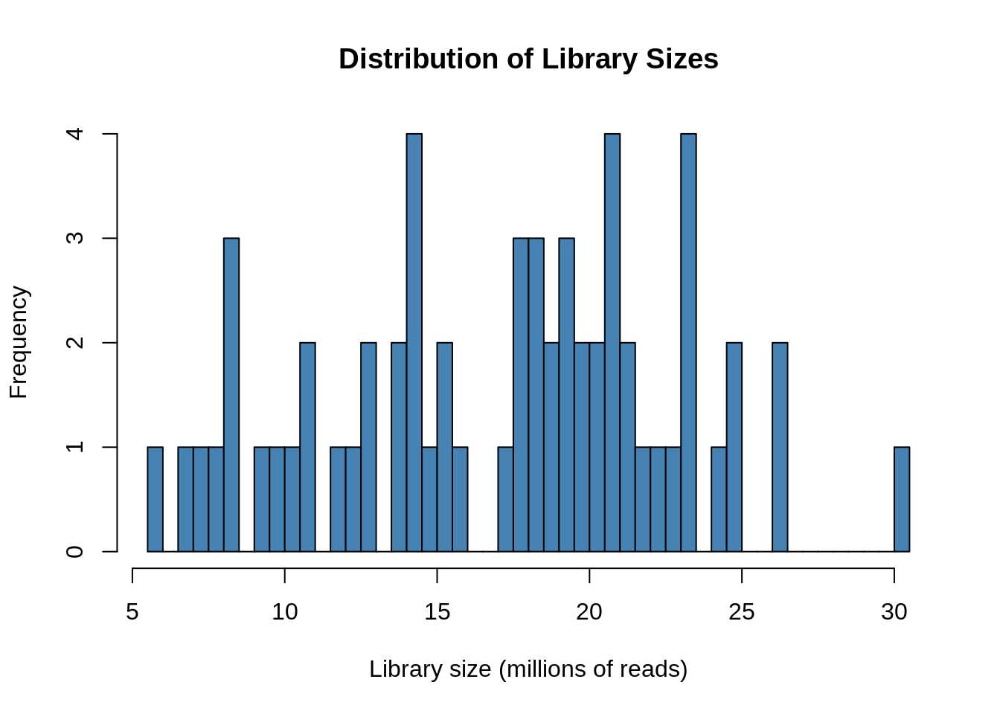
| Library Size (M) | Raw Count for 10 CPM |
|---|---|
| 5.46 | \(\frac{10 \times 5.46 \times 10^6}{10^6} =\) 54.6 reads |
| 17.44 | \(\frac{10 \times 17.44 \times 10^6}{10^6} =\) 174.4 reads |
| 29.21 | \(\frac{10 \times 29.21 \times 10^6}{10^6} =\) 292.1 reads |
A CPM of 10 corresponds to ~55–290 raw reads, depending on the sample.
Let’s remove samples with less than 10 cpm (this is ~54-292 raw counts) in fewer than 20/61 samples There are ~20 samples in each embryonic stage, since our exploratory PCA grouped strongly by embryonic stage, we choose to keep any genes strongly expressed in at least 20/60 samples. Our data is showing a lot of zeros…
keep <- rowSums(cpm(y) > 12) >= 46
table(keep)keep
FALSE TRUE
38947 7054
Important
7055 genes were retained after manual filtering for low gene counts
Plot distribution of filtered, normalized reads
# Set keep.lib.sizes = F and recalculate library sizes after filtering
y <- y[keep, keep.lib.sizes = FALSE]
y <- calcNormFactors(y)
# Calculate logCPM
df_log <- cpm(y, log = TRUE, prior.count = 2)
# Plot distribution of filtered logCPM values
ggplot(data = data.frame(rowMeans(df_log)),
aes(x = rowMeans.df_log.) ) +
geom_histogram(fill = "grey") +
theme_classic() +
labs(y = "Density", x = "Filtered read counts (logCPM)",
title = "Distribution of normalized, filtered read counts")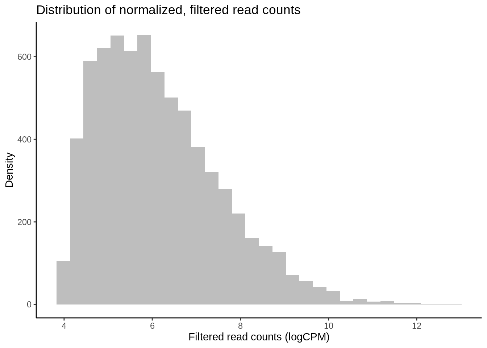
Note
| Region of Plot | Interpretation |
|---|---|
| Left tail (steep drop) | Near-zero or low-expression genes, NB distribution |
| Middle bulk | Actively expressed genes — roughly normal in logCPM |
| Right tail | Highly expressed genes (often a small fraction) |

Non-linear effects: example in edgeR
One of the simplest non-linear relationships that can be fitted to the expression of a transcript across an continuous variable is a second-order polynomial, otherwise known as a quadratic function, which can be expressed as yi=μ+β1x2+β2xyi=μ+β1x2+β2x where yy is the abundance of a given transcript (ii), μμ is the intercept, and yy is the continuous variable. For the parabola generated by fitting a second-order polynomial, β1β1 > 0 opens the parabola upwards while β1β1 < 0 opens the parabola downwards. The vertex of the parabola is controlled by β2β2 such that when β1β1 is negative, greater β2β2 values result in the vertex falling at higher values of xx.
Quadratic polynomials applied to phenotypic performance curves commonly possess negative β1β1 values with positive β2β2 values: a downard-opening parabola with a positive vertex. However, quadtratic curves fitted to gene expression data can take on a variety of postiive or negative forms similar to exponential curves, saturating curves, and parabolas. For instance, the expression of a gene may peak an intermediate level of an environmental level before crashing or it may exponentially decline across that variable. Such trends may better model changes in the transcription of a gene compared to a linear model. To get started, we will fit non-linear second order polynomials before testing for whether model predictions for a given gene are significantly improved by a non-linear linear model. - MarineOmics

Estimate dispersion
Let’s fit a second-order polynomial for the effect of leachate using edgeR. Using differential expression tests, we will then determine whether leachate affected a gene’s rate of change in expression and expression maximum by applying differential expression tests to β1 and β2 parameters. By testing for differential expression attributed to intereactions between time and β1 or β2 , we will then test for whether these parameters were significantly different across exposure times of 4, 9 and 14 hours acclimation to leachate altered the rate of change in expression across leachate (β1 ) or the maximum of expression (β2 ).- >MarineOmics
# Estimate dispersion coefficients
y1 <- estimateDisp(y, robust = TRUE) # Estimate mean dispersal
# Plot tagwise dispersal and impose w/ mean dispersal and trendline
plotBCV(y1) 
The above figure is an output of the plotBCV() function in edgeR, which visualises the biological coefficient of variation (otherwise known as dispersion) parameter fitted to individual genes (black circles), fitted across gene expression level (blue trendline), and averaged across the entire transcriptome (red horizontal line).
The BCV/dispersion parameter is a necessary parameter, symbolized as θ in model specification, that must be estimated in negative binomial GLMs. θ represents the ‘overdispersion’ or the shape of a negative binomial distribution and is thus important for defining the distribution of read count data for a given gene during model fitting. Dispersion or θ can be input during model fitting in edgeR using the three estimates visualized in the above regression.
Note
- The blue line slopes down — dispersion tends to decrease with increasing expression, then flattens out.
 ### Fit multifactorial design matrix
### Fit multifactorial design matrix
# Make leachate^2
metadata_filt <- metadata_filt %>%
mutate(leachate_2 = leachate^2)
# Fit multifactorial design matrix
#design_hpf_nl <- model.matrix(~ 1 + hpf + leachate + leachate_2 + hpf:leachate + hpf:leachate_2, data=metadata_filt)
design_nl <- model.matrix(~ 1 + leachate + leachate_2 + hpf:leachate + hpf:leachate_2, data=metadata_filt)
# Fit quasi-likelihood, neg binom linear regression
#fit_hpf_nl <- glmQLFit(y1, design_hpf_nl)
fit_nl <- glmQLFit(y1, design_nl) Confirm data fit to negative binomial
Taking a detour from tests for DEGs attributed to non-linear interactions, we can now output the residuals of our GLMs in order to better test for whether our data fit the assumptions of negative binomial distribution families. If the distribution of residuals from our GLMs are normal, this indicates that our data meet the assumption of the negative binomial distribution. We will use the equation for estimating Pearson residuals:
\[ residual=\frac{observed−fitted}{\sqrt{fitted(dispersion∗fitted)}} \]
# Output observed
y_nl <- fit_nl$counts
# Output fitted
mu_nl <- fit_nl$fitted.values
# Output dispersion or coefficient of variation
phi_nl <- fit_nl$dispersion
# Calculate denominator
v_nl <- mu_nl*(1+phi_nl*mu_nl)
# Calculate Pearson residual
resid.pearson <- (y_nl-mu_nl) / sqrt(v_nl)
# Plot distribution of Pearson residuals
ggplot(data = melt(as.data.frame(resid.pearson)), aes(x = value)) +
geom_histogram(fill = "grey") +
xlim(-2.5, 5.0) +
theme_classic() +
labs(title = "Distribution of negative binomial GLM residuals",
x = "Pearson residuals",
y = "Density")
Note
Our residuals appear to be normally distributed, indicating that our data fit the negative binomial distribution assumed by the GLM.
colnames(fit_nl$design)[1] "(Intercept)" "leachate" "leachate_2" "leachate:hpf9"
[5] "leachate:hpf14" "leachate_2:hpf9" "leachate_2:hpf14"| Coefficient | What it Represents |
|---|---|
| (Intercept) | The baseline expression: at hpf = 4 and leachate = 0 |
| hpf9 | The difference in expression at 9 hpf vs 4 hpf (when leachate = 0) |
| hpf14 | The difference in expression at 14 hpf vs 4 hpf (when leachate = 0) |
| leachate | The effect of increasing leachate at 4 hpf |
| leachate_2 | The non-linear effect of increasing leachate |
| hpf9:leachate_2 | How the non-linear leachate effect at 9 hpf differs from the leachate effect at 4 hpf |
| hpf14:leachate_2 | How the non-linear leachate effect at 14 hpf differs from the leachate effect at 4 hpf |
| hpf9:leachate | How the leachate effect at 9 hpf differs from the leachate effect at 4 hpf |
| hpf14:leachate | How the leachate effect at 14 hpf differs from the leachate effect at 4 hpf |
## Test each term of the model
# linear effect of leachate
nl_leachate <-
glmQLFTest(fit_nl,
coef = 2,
contrast = NULL,
poisson.bound = FALSE) # Estimate significant DEGs
# non linear effect of leachate (leachate^2)
nl_leachate2 <-
glmQLFTest(fit_nl,
coef = 3,
contrast = NULL,
poisson.bound = FALSE) # Estimate significant DEGs
# interaction of hpf and leachate
nl_leachate_hpf9 <-
glmQLFTest(fit_nl,
coef = 4,
contrast = NULL,
poisson.bound = FALSE) # Estimate significant DEGs
# interaction of hpf and leachate
nl_leachate_hpf14 <-
glmQLFTest(fit_nl,
coef = 5,
contrast = NULL,
poisson.bound = FALSE) # Estimate significant DEGs
# interaction of hpf and leachate^2
nl_leachate2_hpf9 <-
glmQLFTest(fit_nl,
coef = 6,
contrast = NULL,
poisson.bound = FALSE) # Estimate significant DEGs
# interaction of hpf and leachate^2
nl_leachate2_hpf14 <-
glmQLFTest(fit_nl,
coef = 7,
contrast = NULL,
poisson.bound = FALSE) # Estimate significant DEGs# Make contrasts
is.de_nl_leachate <-
decideTestsDGE(nl_leachate, adjust.method = "fdr", p.value = 0.05)
is.de_nl_leachate2 <-
decideTestsDGE(nl_leachate2, adjust.method = "fdr", p.value = 0.05)
is.de_nl_leachate_hpf9 <-
decideTestsDGE(nl_leachate_hpf9, adjust.method = "fdr", p.value = 0.05)
is.de_nl_leachate_hpf14 <-
decideTestsDGE(nl_leachate_hpf14, adjust.method = "fdr", p.value = 0.05)
is.de_nl_leachate2_hpf9 <-
decideTestsDGE(nl_leachate2_hpf9, adjust.method = "fdr", p.value = 0.05)
is.de_nl_leachate2_hpf14 <-
decideTestsDGE(nl_leachate2_hpf14, adjust.method = "fdr", p.value = 0.05)DE summaries & plotMDs
Visualizations of differential expression (logFC) across baseline logCPM can be produced by the plotMD() (short for “mean-difference”) function in edgeR. To do so, plotMD() is input with the results of glmQLFTest, which we used above to test for differential expression attributable to the parameters leachate/leachate and leachate/leachate^2. Let’s produce two such plots for both parameters where “leachate/leachate_2” represents the leachate/leachate^2 parameter:
# Plot differential expression
summary(is.de_nl_leachate) leachate
Down 1938
NotSig 3489
Up 1627plotMD(nl_leachate)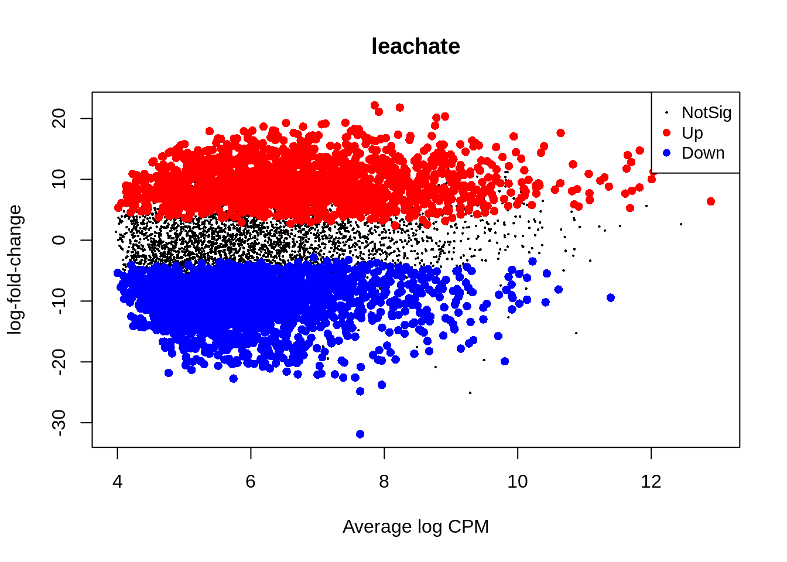
summary(is.de_nl_leachate2) leachate_2
Down 1408
NotSig 4103
Up 1543plotMD(nl_leachate2)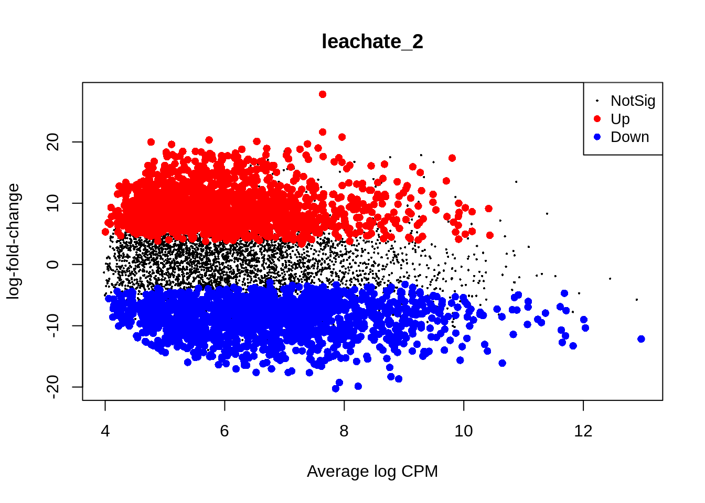
summary(is.de_nl_leachate_hpf9) leachate:hpf9
Down 1793
NotSig 3587
Up 1674plotMD(nl_leachate_hpf9)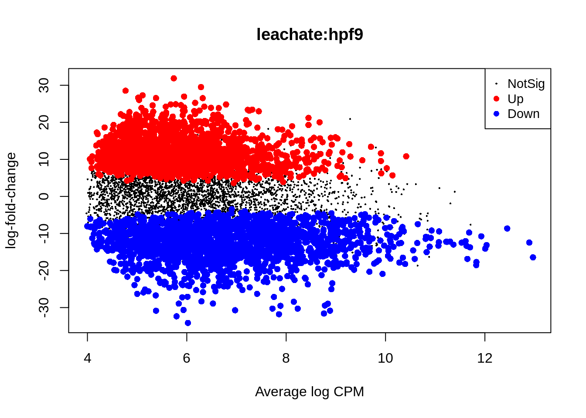
summary(is.de_nl_leachate_hpf14) leachate:hpf14
Down 2076
NotSig 2703
Up 2275plotMD(nl_leachate_hpf14)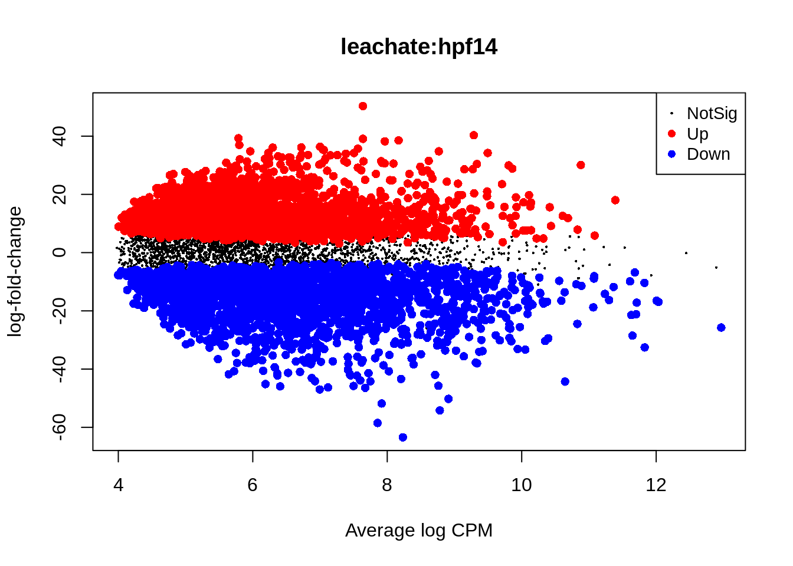
summary(is.de_nl_leachate2_hpf9) leachate_2:hpf9
Down 1348
NotSig 4221
Up 1485plotMD(nl_leachate2_hpf9)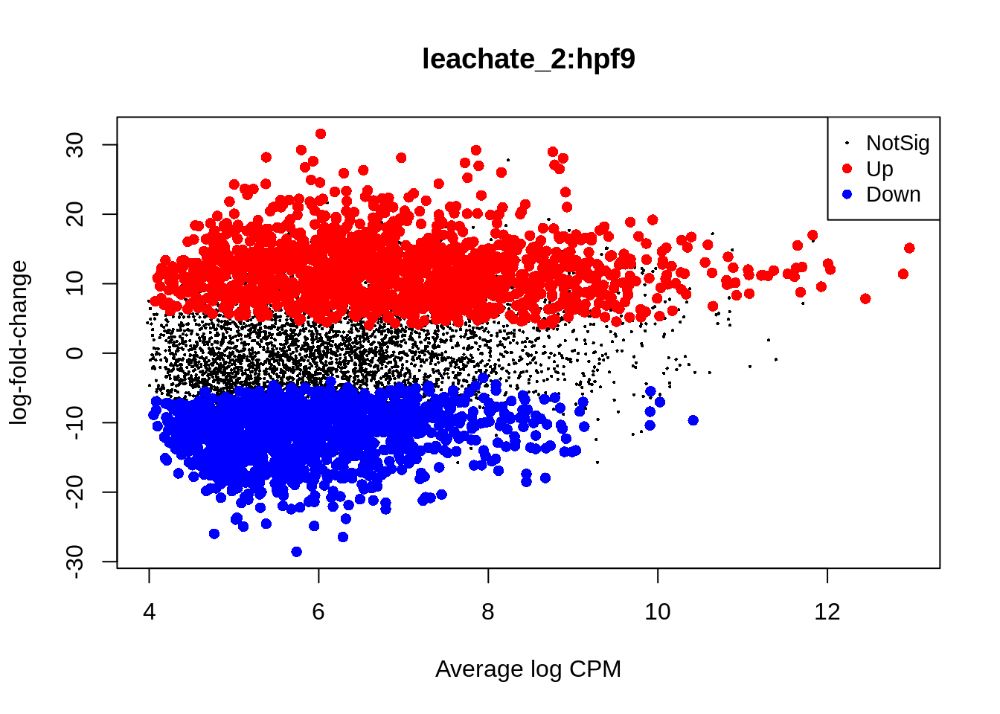
summary(is.de_nl_leachate2_hpf14) leachate_2:hpf14
Down 2016
NotSig 3137
Up 1901plotMD(nl_leachate2_hpf14)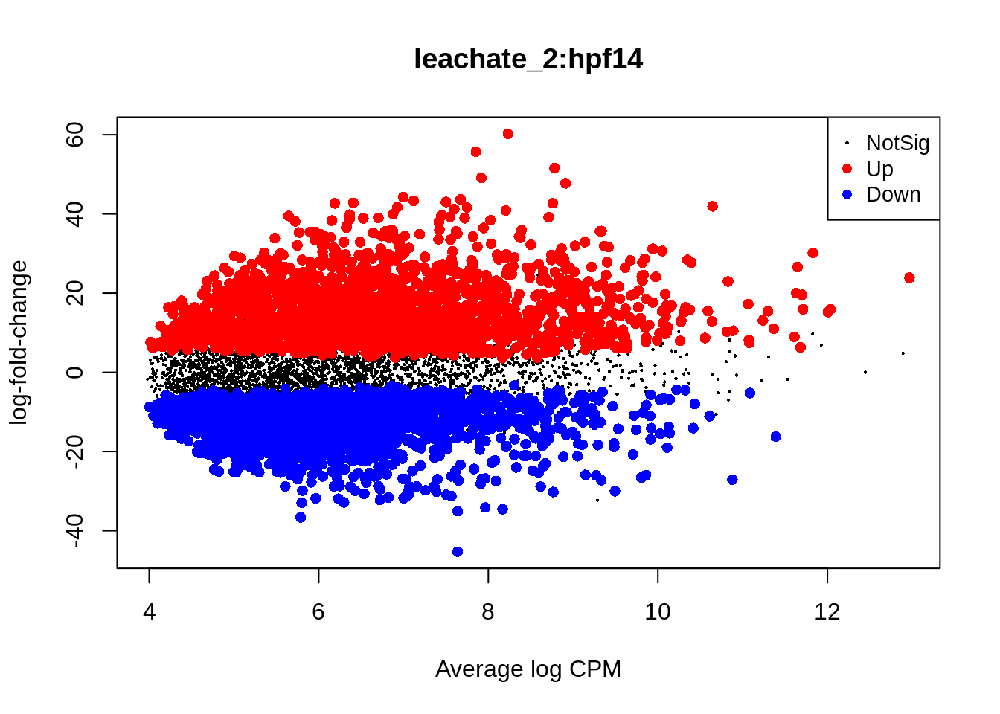
Caution
The non-linear term appears to be a perfect flip of the linear term. Is this expected? Or does this indicate the non-linear term doesn’t describe the data any better than the linear term? The pattern is expected to be a mirror, but we’d expect the scale of the y axis to change. In our data, it does not. Note also the log fold change scales in each plot! Log fold changes of 60, 40, 30… they are red flags! These scales are huge, indicating some imbalance… Even if genes are filtered for expression, edgeR can still return huge logFCs when a gene is high in one group and absent in the rest. Zeros or low counts can produce huge logFCs if the gene is only present in one small group.
| Step | Verdict |
|---|---|
| Filtering | ✅ Already stringent |
| prior.count = 2 | ✅ Reasonable, no need to increase further |
| Extreme logFCs remain? | 🔍 Due to real group differences, not low counts |
| Action | Try limma-Voom, Visualize gene, check group sizes, possibly flag/remove |
DESeq2
Filter
# Filter rows where at least 30% of the columns have a count of ~200
gcm_filt_des <- gcm_filt %>%
filter(rowSums(across(everything(), ~ . > 15)) >= 0.75 * ncol(gcm_filt))
nrow(gcm_filt_des)[1] 12565Make DESeq2 object
### WALD TEST - FULL MODEL ###
dds <- DESeqDataSetFromMatrix(countData = gcm_filt_des,
colData = metadata_filt,
design = formula( ~ 1 + hpf + leachate + hpf:leachate))
# Transform count (variance stabilized)
vsd <- vst(dds)plot distribution of filtered, normalized reads
# Extract VST-transformed expression matrix
vsd_mat <- assay(vsd)
# Flatten it into a vector
vsd_vals <- as.vector(vsd_mat)
# Create a dataframe for ggplot
df_vsd <- data.frame(vsd_count = vsd_vals)
# Plot
ggplot(df_vsd, aes(x = vsd_count)) +
geom_histogram(fill = "grey") +
theme_classic() +
labs(
title = "Histogram of Variance-Stabilized Counts",
x = "VST-transformed read count",
y = "Frequency"
)
VST compresses the high-end of the count distribution and expands the low-end, making the variance roughly constant across the range.
The resulting values are on an approximate log2 scale but not exact log2(count + 1) — VST is more nuanced, especially for low counts.
A range of 5 to 15 corresponds roughly to raw counts ranging from 2³² to 2¹⁵ ≈ 32 to 32,000, so it’s realistic for RNA-seq gene expression data.
Run DESeq Test
dds <- DESeq(dds, test="LRT", reduced=~hpf+leachate)
resultsNames(dds) # see what contrast names are available[1] "Intercept" "hpf_9_vs_4" "hpf_14_vs_4" "leachate"
[5] "hpf9.leachate" "hpf14.leachate"# Main effect of leachate (baseline hpf level)
res_leachate <- results(dds, name = "leachate")
summary(res_leachate)
out of 12565 with nonzero total read count
adjusted p-value < 0.1
LFC > 0 (up) : 1, 0.008%
LFC < 0 (down) : 6, 0.048%
outliers [1] : 1, 0.008%
low counts [2] : 0, 0%
(mean count < 23)
[1] see 'cooksCutoff' argument of ?results
[2] see 'independentFiltering' argument of ?resultssig_leachate <- as.data.frame(subset(res_leachate, padj<0.05))
sig_leachate$gene <- rownames(sig_leachate)
rownames(sig_leachate) <- NULL
write_csv(sig_leachate, file = "../output/09_deg_multifactorial/sig_leachate.csv")
plotMA(res_leachate, alpha = 0.05, ylim = c(-5, 5), main = "MA Plot: Leachate Effect")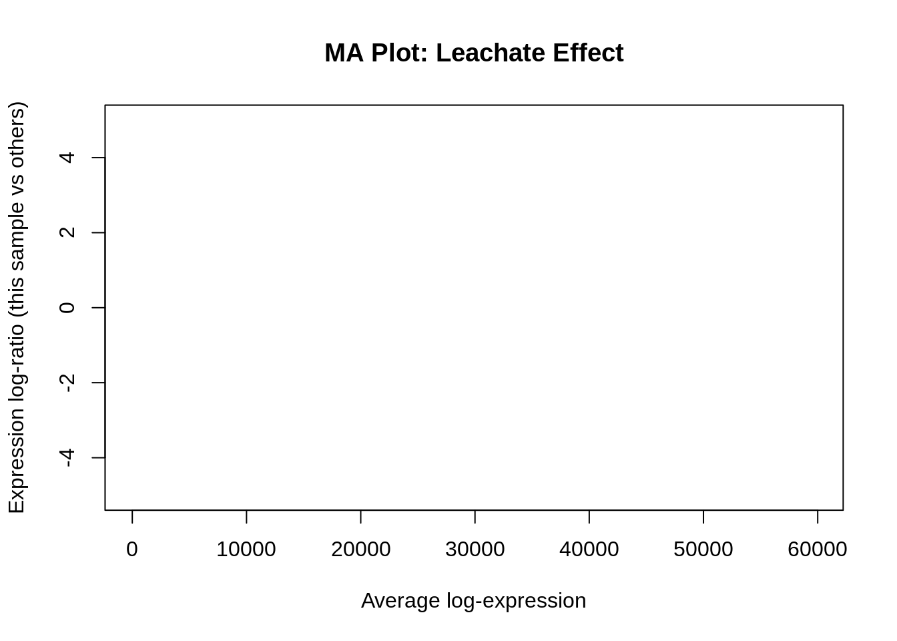
# Main effect of hpf levels (because hpf is a factor with levels 4, 9, 14)
res_hpf9 <- results(dds, name = "hpf_9_vs_4") # if reference is hpf4
summary(res_hpf9)
out of 12565 with nonzero total read count
adjusted p-value < 0.1
LFC > 0 (up) : 5, 0.04%
LFC < 0 (down) : 2, 0.016%
outliers [1] : 1, 0.008%
low counts [2] : 0, 0%
(mean count < 23)
[1] see 'cooksCutoff' argument of ?results
[2] see 'independentFiltering' argument of ?resultssig_hpf9 <- as.data.frame(subset(res_hpf9, padj<0.05))
sig_hpf9$gene <- rownames(sig_hpf9)
rownames(sig_hpf9) <- NULL
write_csv(sig_hpf9, file = "../output/09_deg_multifactorial/sig_hpf9.csv")
plotMA(res_hpf9, ylim = c(-5, 5), main = "MA Plot: hpf 9 vs 4")
# Main effect of hpf levels (becuase hpf is a factor with levels 4, 9, 14)
res_hpf14 <- results(dds, name = "hpf_14_vs_4")
summary(res_hpf14)
out of 12565 with nonzero total read count
adjusted p-value < 0.1
LFC > 0 (up) : 6, 0.048%
LFC < 0 (down) : 1, 0.008%
outliers [1] : 1, 0.008%
low counts [2] : 0, 0%
(mean count < 23)
[1] see 'cooksCutoff' argument of ?results
[2] see 'independentFiltering' argument of ?resultssig_hpf14 <- as.data.frame(subset(res_hpf14, padj<0.05))
sig_hpf14$gene <- rownames(sig_hpf14)
rownames(sig_hpf14) <- NULL
write_csv(sig_hpf14, file = "../output/09_deg_multifactorial/sig_hpf14.csv")
plotMA(res_hpf14, ylim = c(-5, 5), main = "MA Plot: hpf 14 vs 4")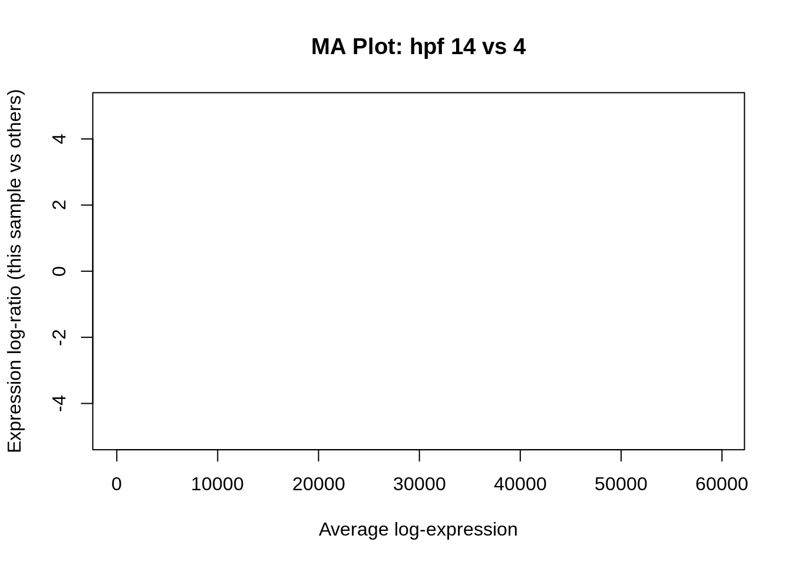
# Interaction effects
res_interaction_9 <- results(dds, name = "hpf9.leachate")
summary(res_interaction_9)
out of 12565 with nonzero total read count
adjusted p-value < 0.1
LFC > 0 (up) : 6, 0.048%
LFC < 0 (down) : 1, 0.008%
outliers [1] : 1, 0.008%
low counts [2] : 0, 0%
(mean count < 23)
[1] see 'cooksCutoff' argument of ?results
[2] see 'independentFiltering' argument of ?resultssig_interaction_9 <- as.data.frame(subset(res_interaction_9, padj<0.05))
sig_interaction_9$gene <- rownames(sig_interaction_9)
rownames(sig_interaction_9) <- NULL
write_csv(sig_interaction_9, file = "../output/09_deg_multifactorial/sig_interaction_9.csv")
plotMA(res_interaction_9, ylim = c(-5, 5), main = "MA Plot: hpf9 x leachate interaction")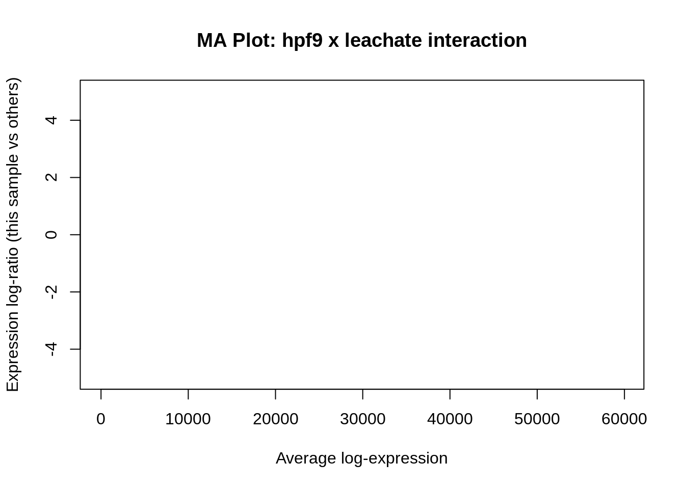
res_interaction_14 <- results(dds, name = "hpf14.leachate")
summary(res_interaction_14)
out of 12565 with nonzero total read count
adjusted p-value < 0.1
LFC > 0 (up) : 7, 0.056%
LFC < 0 (down) : 0, 0%
outliers [1] : 1, 0.008%
low counts [2] : 0, 0%
(mean count < 23)
[1] see 'cooksCutoff' argument of ?results
[2] see 'independentFiltering' argument of ?resultssig_interaction_14 <- as.data.frame(subset(res_interaction_14, padj<0.05))
sig_interaction_14$gene <- rownames(sig_interaction_14)
rownames(sig_interaction_14) <- NULL
write_csv(sig_interaction_14, file = "../output/09_deg_multifactorial/sig_interaction_14.csv")
plotMA(res_interaction_14, ylim = c(-5, 5), main = "MA Plot: hpf14 x leachate interaction")